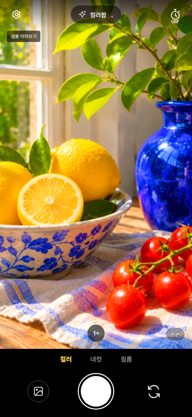
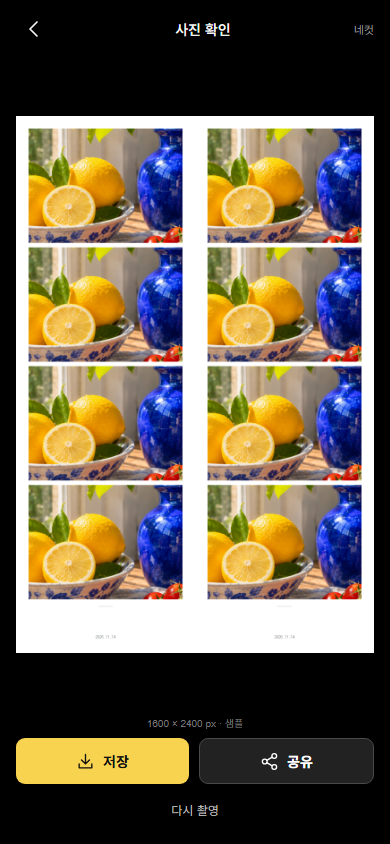

사진 촬영에 컬러·필름 효과를 적용하고 네컷 사진을 저장·공유하는 Android 카메라 앱입니다. 테스트 APK를 배포하고 있으며 Google Play 심사 중입니다.
MORI CAM
서비스 소개
주요 기능
- 사진 촬영 — 카메라 미리보기와 촬영 모드·타이머 선택
- 컬러·필름 — 사진에 컬러와 필름 효과 적용
- 네컷 사진 — 사진을 프레임으로 모아 결과 확인
- 저장·공유 — 결과 사진 저장·공유와 선택적 QR 사진 공유
실제 화면
레몬과 파란 화병 샘플을 사용한 실제 앱 화면입니다.


배포·소개
공개 저장소에는 APK와 배포 기록을 제공합니다. 앱 소스는 비공개입니다.